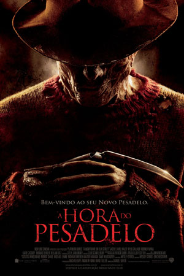
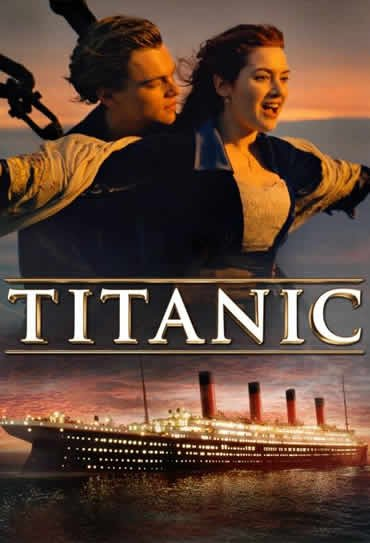
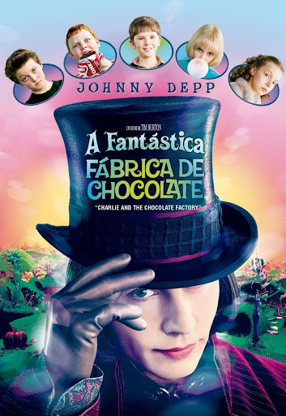
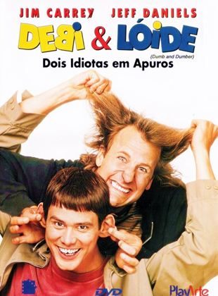

A hora do pesadelo
Um grupo de adolescentes tem pesadelos horríveis, em que são atacados por um homem deformado com garras de aço. Ele apenas aparece durante o sono e, para escapar, é preciso acordar. Os crimes vão ocorrendo seguidamente, até que se descobre que o ser misterioso é na verdade Freddy Krueger, um homem que molestou crianças na rua Elm e que foi queimado vivo pela vizinhança. Agora, Krueger pode ter retornado para se vingar daqueles que o mataram, através do sono..
Assista o trailerTitanic
Um artista pobre e uma jovem rica se conhecem e se apaixonam na fatídica jornada do Titanic, em 1912. Embora esteja noiva do arrogante herdeiro de uma siderúrgica, a jovem desafia sua família e amigos em busca do verdadeiro amor.
Assista o trailerA Fantastica Fabrica de Chocolate
Baseado no conto de Roald Dahl, este cômico e fantástico filme segue o jovem Charlie Bucket e seu avô Joe. Eles se juntam a um pequeno grupo de ganhadores de uma competição, os quais vão para um passeio na mágica e misteriosa fábrica do excêntrico Willy Wonka.Ajudado por seus anões trabalhadores, Wonka esconde uma surpresa para durante o passeio.
Assista o trailerDebi e loide
Dois amigos debilóides vão para Aspen, no estado do Colorado para tentar devolver uma maleta esquecida pela passageira da limusine que um deles estava dirigindo para o aeroporto. Sem saber que na mala havia uma quantia enorme de dinheiro, que serviria para pagar o resgate de um sequestro, os dois acabam sendo perseguidos pela polícia e por assassinos profissionais.
Assista o trailerA lagoa azul
Após um naufrágio, duas crianças e o velho cozinheiro de um navio vão parar em uma ilha deserta no Oceano Pacífico. Pouco tempo depois, o cozinheiro morre, deixando o menino Richard e a menina Emmeline entregues à própria sorte.
Assista o trailer